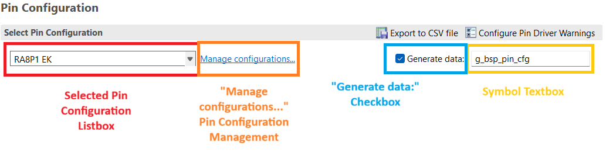

Changes
| FSP Version | Changes |
| 6.3.0 | Initial version. |
Overview
The minimum e2 Studio version for FSP v6.3.0 is e2 Studio 2025-12. e2 Studio 2025-12 has known issues with the pin configuration tooling that is accessed within the project configuration view, which is the "Pins" tab of an open solution or project configuration. This guide serves to document these known issues and to provide workarounds for different affected project types.
Affected Project Types
Generally, any project chain which contains three or more projects will see issues with the pin configuration tooling. A solution counts towards the project chain length. For example, a (Solution + Project) would count as a project chain of length two. Pin configuration actions like assignments, unassignments, and configuration changes that are meant to appear downstream in the project chain beyond the project in which they are made, may fail to propagate correctly beyond the first encountered downstream project.
FSP Solution Templates which create affected project chains include the following.
- Single Core, TrustZone (Solution + Secure Project + Nonsecure project)
- Multicore, Flat (Solution + CPU0 Project + CPU1 Project)
- Multicore, TrustZone (Solution + CPU0 Secure Project + CPU1 Secure Project + CPU0 Nonsecure Project + CPU1 Nonsecure Project)
The currently available choices of Bare Metal, FreeRTOS, or ThreadX for a template do not matter since those categories only affect the inclusion of additional packs or configuration and do not affect project chain length.
Workarounds for Affected Project Types
- Note
- "project chain" refers to the combination of the solution (if present) and all projects. "project" only refers to a project and not a solution.
-
Consult the below legend to understand the pin configuration UI elements referred to in the workarounds.

e2 Studio Pin Configuration UI
(Single Core, TrustZone) and (Multicore, Flat) Solution Templates (Solution + Two Projects)
- Note
- Under this section, "first project" may be either a Secure project or CPU0 project while "second project" may be either a Nonsecure project or a CPU1 project depending on the template type which was generated.
Workaround
Disable all pin configuration generation in the solution before the propagation of pin information to the second project. Do not use the solution for pin configuration. The first and second projects may further perform pin configuration.
In the solution.
- Immediately after creating the template, the solution and all projects will build. Wait until this is complete and the solution configuration opens automatically.
- Open the pin configuration tool ("Pins" tab) in the now open solution configuration.
- Select each pin configuration in the listbox, and if the "Generated data:" checkbox is checked for the pin configuration, uncheck the box.
- Rebuild the solution.
In the first project.
- Open the first project configuration and navigate to the pin configuration tool ("Pins" tab).
- Assign and configure any pins which should belong to the first project, and unassign (disable) any pins which should be configurable in the second project.
- Rebuild the solution.
In the second project.
- Open the second project configuration and navigate to the pin configuration tool ("Pins" tab).
- If any pins are marked as an Error or Warning, modify their configuration to be identical to the configuration of the first project which owns the pin.
- Review all pins which have a green checkmark, and if any configuration field of the pin has a yellow triangle, modify that configuration field to be identical to the configuration of the first project in the chain which owns the pin.
- Assign and configure any pins which are unassigned, if necessary.
- Rebuild the solution.
As a final optional step.
- The
ra_gen/pin_data.c of each project may be checked for correctness as a final means of detecting a misconfigured pin.
The solution must remain unused for any pin configuration. The solution may still be used as a means to build all projects sequentially. Further pin configuration modifications may occur in the first and second project configurations.
(Multicore, TrustZone) Solution Template (Solution + Four Projects)
Workaround
Disable all pin configuration generation in the solution before the propagation of pin information to the remaining projects. Do not use the solution for pin configuration. Perform all pin configuration in order of the project chain, from the CPU0 Secure project through the CPU1 Nonsecure project. The CPU0 Nonsecure and CPU1 Nonsecure projects may further perform pin configuration.
In the solution.
- Immediately after creating the template, the solution and all projects will build. Wait until this is complete and the solution configuration opens automatically.
- Open the pin configuration tool ("Pins" tab) in the now open solution configuration.
- Select each pin configuration in the listbox, and if the "Generated data:" checkbox is checked for the pin configuration, uncheck the box.
- Rebuild the solution.
In the CPU0 Secure project.
- Open the CPU0 Secure project configuration and navigate to the pin configuration tool ("Pins" tab).
- Assign and configure any pins which should belong to the CPU0 Secure project, and unassign (disable) any pins which should be configurable in the CPU1 Secure, CPU0 Nonsecure, or CPU1 Nonsecure projects.
- Rebuild the solution.
In the CPU1 Secure project.
- Open the CPU1 Secure configuration and navigate to the pin configuration tool ("Pins" tab).
- If any pins are marked as an Error, modify their configuration to be identical to the configuration of the CPU0 Secure project which owns the pin.
- Review all pins which have a green checkmark, and if any configuration field of the pin has a yellow triangle, modify that configuration field to be identical to the configuration of the CPU0 Secure project which owns the pin.
- Assign and configure any pins which are unassigned, if necessary.
- Rebuild the solution.
In the CPU0 Nonsecure project.
- Open the CPU0 Nonsecure configuration and navigate to the pin configuration tool ("Pins" tab).
- If any pins are marked as an Error, modify their configuration to be identical to the configuration of the previous project in the chain which owns the pin. This might be the CPU0 Secure or CPU1 Secure project.
- Review all pins which have a green checkmark, and if any configuration field of the pin has a yellow triangle, modify that configuration field to be identical to the configuration of the previous project in the chain which owns the pin. This might be the CPU0 Secure or CPU1 Secure project.
- Assign and configure any pins which are unassigned, if necessary.
- Rebuild the solution.
In the CPU1 Nonsecure project.
- Open the CPU1 Nonsecure configuration and navigate to the pin configuration tool ("Pins" tab).
- If any pins are marked as an Error, modify their configuration to be identical to the configuration of the previous project in the chain which owns the pin. This might be the CPU0 Secure, CPU1 Secure, or CPU0 Nonsecure project.
- Review all pins which have a green checkmark, and if any configuration field of the pin has a yellow triangle, modify that configuration field to be identical to the configuration of the previous project in the chain which owns the pin. This might be the CPU0 Secure, CPU1 Secure, or CPU0 Nonsecure project.
- Assign and configure any pins which are unassigned, if necessary.
- Rebuild the solution.
As a final optional step.
- The
ra_gen/pin_data.c of each project may be checked for correctness as a final means of detecting a misconfigured pin.
The solution must remain unused for any pin configuration. The solution may still be used as a means to build all projects sequentially. Further pin configuration modifications may occur in the CPU0 Nonsecure and CPU1 Nonsecure projects. The solution should be used to rebuild all projects if further pin configuration modifications are made in the CPU0 Nonsecure and CPU1 Nonsecure projects.